Topic 7.18 · Symmetry and Transformations · Lesson 2 of 6
Translations and Vectors
A translation is the simplest move a shape can make, a slide. Today you describe slides exactly with column vectors, the notation later used for forces and motion.
By the end you’ll know…
A translation slides a shape without turning, reflecting or resizing it, so the image is identical to the original.
A column vector gives the movement: right or left on top, up or down below.
A negative top number means left, and a negative bottom number means down.
Every point of the shape moves by the same vector.
By the end you can
G3Translate a shape by a given column vector.
G4Write the column vector describing a given translation, including negative components.
Work down the page at your own pace. Write every answer in your book first, then click to check it.
01
Do Now
About 5 minutes
1
Work out
2
Work out
3
Work out
4
Is the point to the left or right of the y-axis, and above or below the x-axis?
Left of the y-axis and above the x-axis.
Remember these?
LAST LESSON
What is the order of rotational symmetry of a regular hexagon?
Order
LAST WEEK
The probability that it rains tomorrow is Find the probability that it does not rain.
LAST TERM
Find the midpoint of and
LAST YEARA triangle has a corner at The triangle moves squares to the right. Where is that corner now?
02
Learn
Read each card, then follow the worked examples one step at a time.
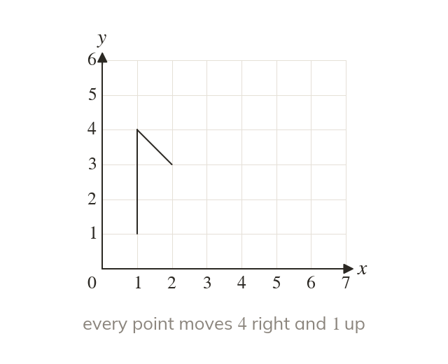
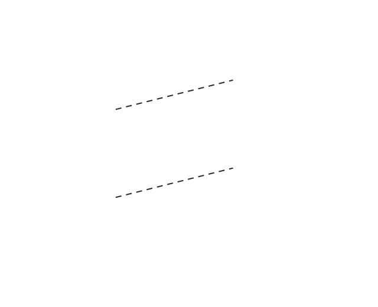
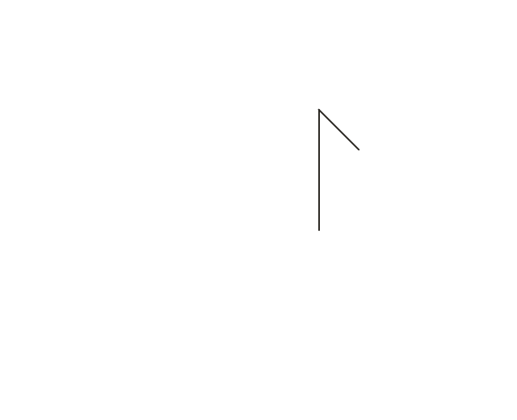
A slide and nothing else
A translation slides a shape without turning, reflecting or resizing it. Every point moves by the same amount. The image is identical to the object.
A translation slides a shape without turning, reflecting or resizing it. Every point moves by the same amount, so the image is identical to the object.
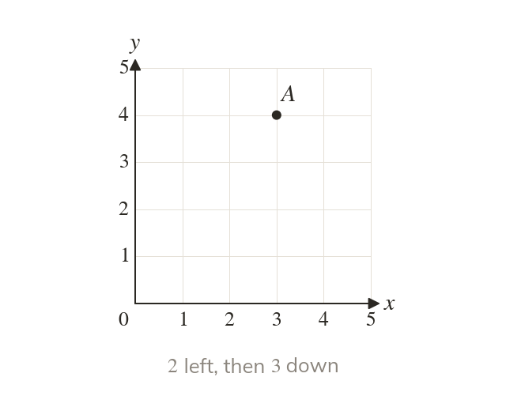
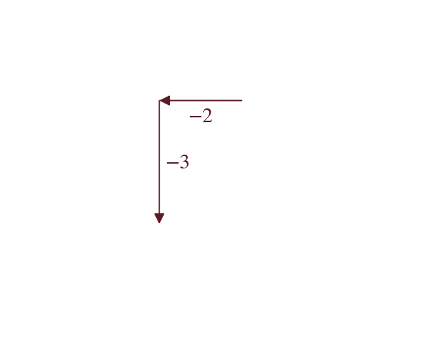
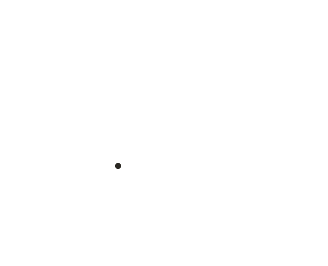
The column vector
A column vector gives the movement: the top is across, the bottom is up. So across and up means left and down.
A column vector gives the movement: the top number is across and the bottom number is up. So means right and up, and means left and down.
WORKED EXAMPLE A
Translate the flag by .
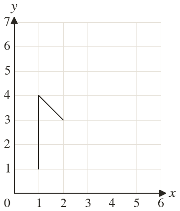
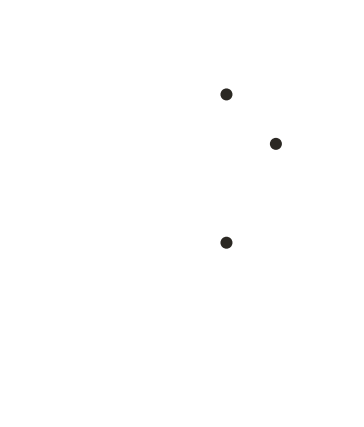
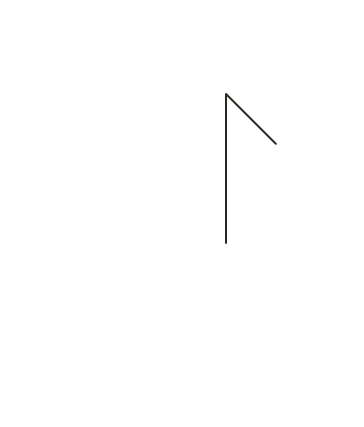
Foot moves right and up to
Top and bar to and to
Jointhe image, facing the same way
WORKED EXAMPLE B
Translate the triangle by .
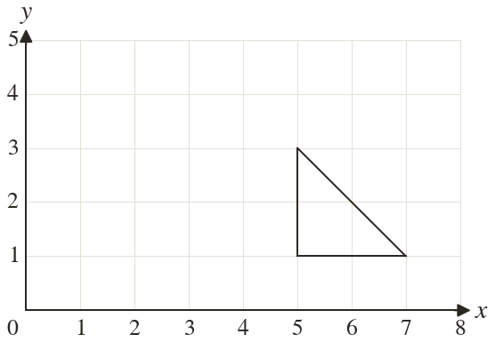
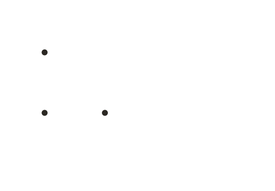
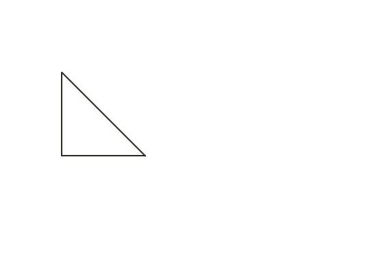
Cornerseach moves left and up
to to and to
Jointhe image, the same shape and size
YOUR TURN · a
Translate the point by .
Hint. Follow the worked example: Foot → Top and bar → Join
YOUR TURN · b
Translate the triangle with corners and by , and write its new corners.
Hint. Follow the worked example: Corners → Join
and
03
Check your understanding
Pick an answer. If it's wrong, the feedback tells you which mistake it was.
What movement does the column vector describe?
Yes. Top means left bottom means up.
Not quite. The bottom is positive means up. Each number has its own sign.
Not quite. The top is negative means left.
Not quite. The top number is left/right, the bottom is up/down.
Translate the point by .
Not quite. The top number moves x, the bottom moves y
Not quite. The bottom is so move down
Not quite. Add the vector, don't subtract it
Yes. and
A triangle with corners and is translated, and moves to Where does move to?
Not quite. Every corner moves the same way, not just one.
Not quite. went to so move right and up, not left and down.
Not quite. to is right, up. So goes to
Yes. The move is right, up. Every corner moves the same
04
Practise
mark as you go
Checkpoint.Show your teacher before you go on
1.
Translate the triangle by . Write the image's corners.